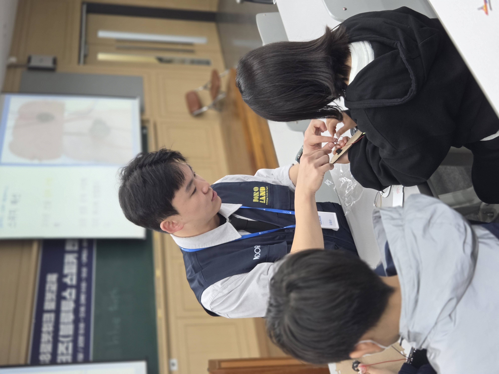
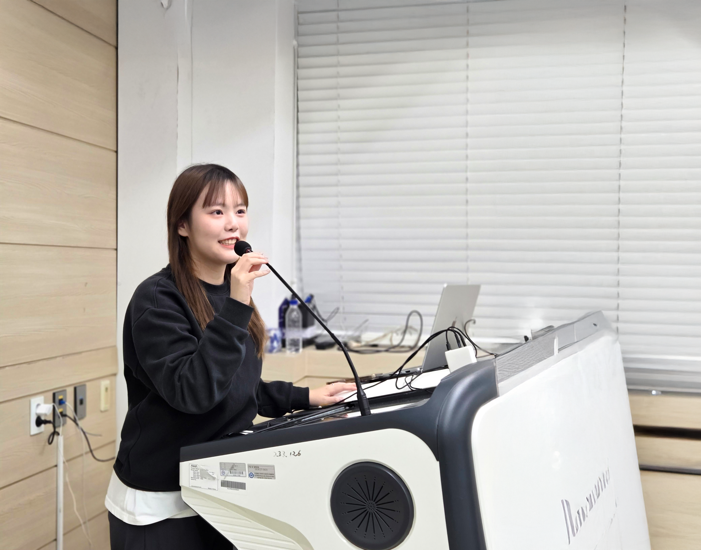

DOROSSAEM의 다양한 교육 활동
AI·로봇·코딩·메이킹 교육 현장에서 공학 지식과 교육 역량을 함께 쌓아갑니다.
월간보고서에서 활동 자세히 알아보기 ↗


교육 현장 강의
- AI, 로봇, 코딩, 메이킹 디지털 교육 주·보조강사
- 초·중·고 및 대학 연계 디지털 교육
- 학생 맞춤형 멘토링 및 온라인 수업
캠프·프로젝트 운영
- 청소년 대상 도로랜드 AI·디지털 체험 캠프 참여
- 지자체·공공기관 기반 메이킹 교육 프로그램
- 대회, 해커톤, 체험 부스 등 프로젝트형 교육 운영
콘텐츠 이해 및 성장
- 교육 콘텐츠, 교구, 수업자료 이해 및 현장 활용
- 활동 경험에 따라 주강사·캠프 운영·신규 강사 교육으로 역할 확장
- 활동 이력 기반 포트폴리오 축적
주강사와 보조강사,
어떤 역할을 하나요?
👩🏫 주 도로쌤 (Main)
-
교육 자료 맞춤 구성
기본 PPT를 제공해 드리며, DORO와 논의하여 본인만의 스타일로 자유롭게 자료를 재구성합니다. -
강의 총괄 및 진행
보조강사에게 강의 구성을 사전 공유하고, 책임자로서 수업의 처음부터 끝까지 전체 흐름을 이끕니다.
👨🔧 보조 도로쌤 (Assistant)
-
밀착 학습 케어
주강사와 1회 이상 사전 미팅을 진행하며, 학생들이 교구 메이킹과 실습에서 뒤처지지 않도록 밀착 지도합니다. -
원활한 현장 및 운영 지원
수업 중 발생하는 변수에 적극적으로 대응하며, 가이드라인에 따라 생생한 현장 사진을 촬영합니다.
*강사 유형은 따로 구분하여 선발하지 않으며, 강의 신청 시마다 선택하여 진행됩니다.